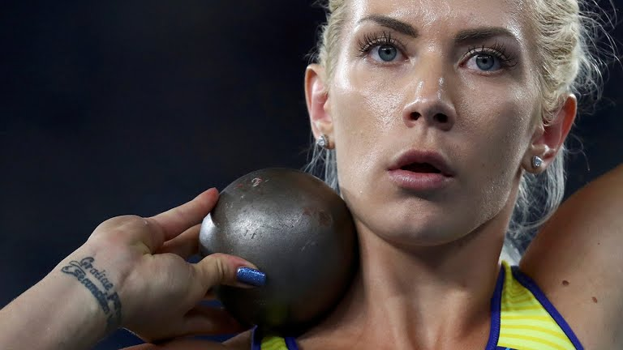
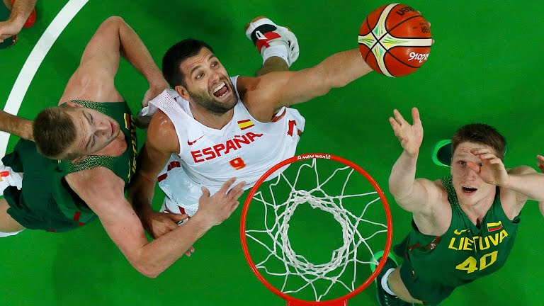
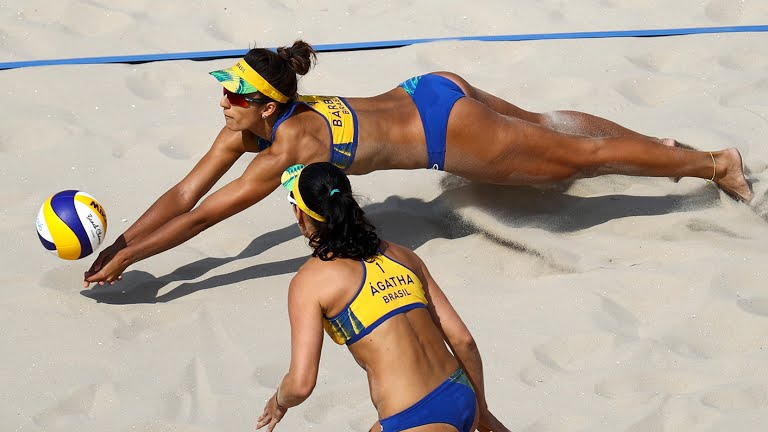

The archery events at the 2016 Summer Olympics in Rio de Janeiro were held over a seven-day period from 6 to 12 August. Four events took place, all were staged at the Sambadrome Marques de Sapucai. All four events were recurve archery events, held under the World Archery-approved 70-meter distance and rules. The competition started with an initial ranking round involving all 64 archers of each gender. Each archer would shoot a total of 72 arrows to be seeded from 1–64 according to their score.
Athletics qualification for Rio 2016

The archery events at the 2016 Summer Olympics in Rio de Janeiro were held over a seven-day period from 6 to 12 August. Four events took place, all were staged at the Sambadrome Marques de Sapucai. All four events were recurve archery events, held under the World Archery-approved 70-meter distance and rules. The competition started with an initial ranking round involving all 64 archers of each gender. Each archer would shoot a total of 72 arrows to be seeded from 1–64 according to their score.
Bascetball strategy

The archery events at the 2016 Summer Olympics in Rio de Janeiro were held over a seven-day period from 6 to 12 August. Four events took place, all were staged at the Sambadrome Marques de Sapucai. All four events were recurve archery events, held under the World Archery-approved 70-meter distance and rules. The competition started with an initial ranking round involving all 64 archers of each gender. Each archer would shoot a total of 72 arrows to be seeded from 1–64 according to their score.
Beach Voleyball - how to get in shape?

The archery events at the 2016 Summer Olympics in Rio de Janeiro were held over a seven-day period from 6 to 12 August. Four events took place, all were staged at the Sambadrome Marques de Sapucai. All four events were recurve archery events, held under the World Archery-approved 70-meter distance and rules. The competition started with an initial ranking round involving all 64 archers of each gender. Each archer would shoot a total of 72 arrows to be seeded from 1–64 according to their score.